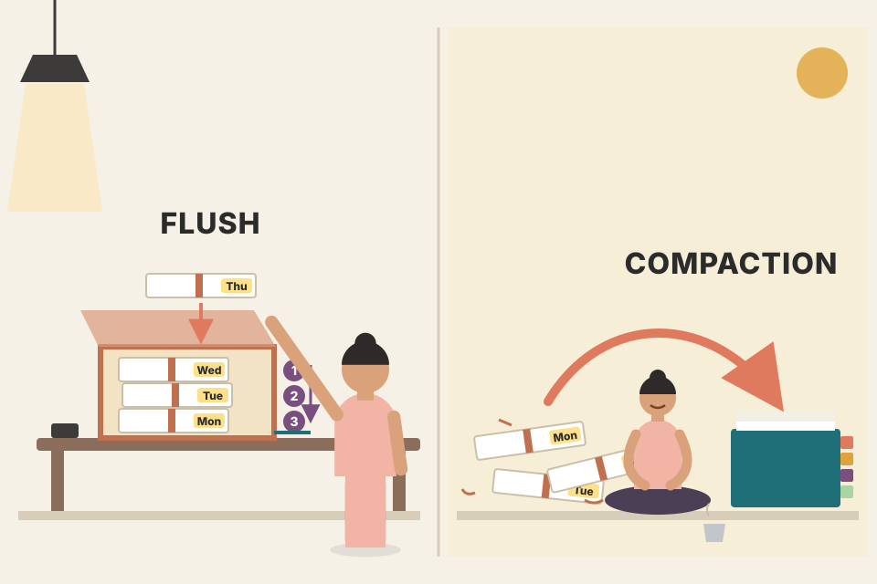
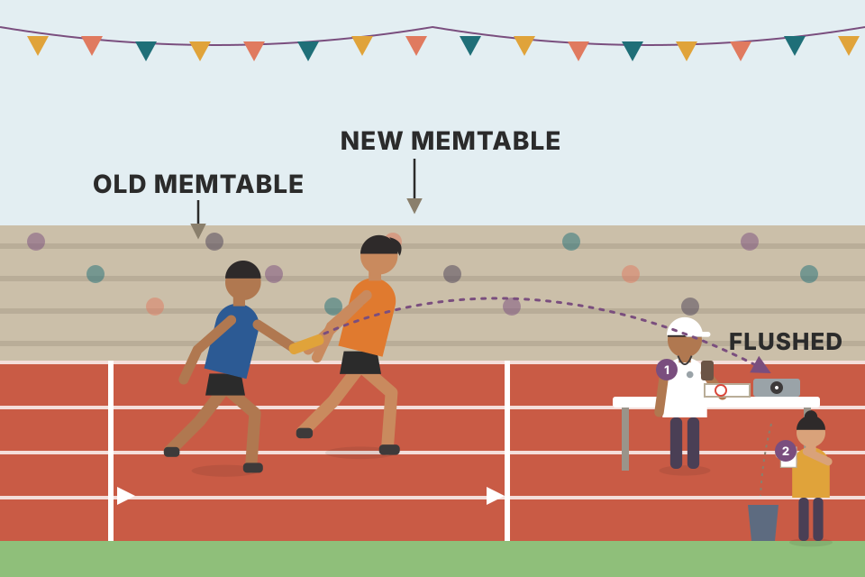
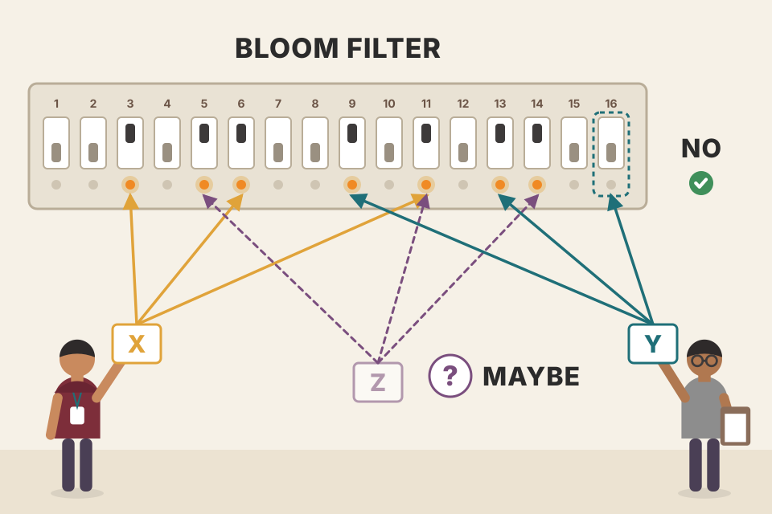

The whole chapter in plain words and in the book's order: LSM Trees from memtable to compaction, tombstones, merge-iteration, the three amplifications, SSTables, Bloom filters, skiplists, Bitcask and WiscKey, and what happens when you stack one log on top of another (filesystem, SSD). Every simulator on this page runs the code shown next to it. Numbers marked modelled come from those simulations or formulas, not from real hardware; numbers marked measured come from the cited paper or documentation.
One idea drives the chapter: instead of changing data where it lives, write every change as a new record and sort things out later. Each row below is one stage of that idea; each box is a plate further down.
The chapter opens with a line from Pat Helland: "Accountants don't use erasers or they end up in jail." An accountant who finds a mistake doesn't rub it out; they add a correcting entry, and the true total is worked out by going through all the entries [HELLAND15].
Immutable storage works the same way. A file, once written, is never changed. New records go into new files, and to find the current value of a key (or to prove it's gone) you may have to look at several files and combine them. Mutable storage does the opposite: it changes the record on disk, in place.
Earlier chapters already touched immutability (copy-on-write B-Trees, FD-Trees, Bw-Trees). Petrov lists what hurts in a mutable B-Tree: most I/O is random; every write must first locate its page; splits and merges move records that were already written; pages need maintenance after a while; pages are fixed-size with reserved free space; and changing one cell still means rewriting the whole page. Immutable structures can make I/O sequential and avoid page rewrites. This chapter is about the most popular one: the LSM Tree.
A whiteboard vs a notebook written in pen. On the whiteboard (B-Tree) you find the line and wipe it; there's always exactly one answer, but you spend time hunting for the line, and you leave empty space on the board for later. In the pen notebook (LSM) you just write the next line at the bottom; finding today's answer means reading back from the end until you meet the newest entry for that key.
The mutable side has to (1) find the page and (2) write the whole 4 KB page back even though one 32-byte record changed. The log side only appends 32 bytes, but its size keeps growing with dead versions (crossed out), and a reader must scan back to find the newest version. The readout counts both costs. These two counters are the seed of the whole chapter: write cost vs read/space cost.
From the B-Tree chapters: buffering reduces space overhead and write amplification. Buffering can be used in two ways: to postpone writes to disk pages (FD-Trees, WiredTiger), or to make writes sequential. The LSM Tree does the second: it buffers in memory and appends to disk. It is a disk-resident structure like a B-Tree, but with fully occupied nodes, built for sequential access. It was introduced by Patrick O'Neil and Edward Cheng [ONEIL96]; the name comes from log-structured filesystems, which write every change into a log-like file [ROSENBLUM92].
A postman with a sack. Delivering each letter the moment it arrives means a drive across town per letter (random I/O). Filling the sack, sorting it, then doing one route (sequential I/O) moves the same letters for a fraction of the driving.
The model: in-place = one random page write per record (records × latency). Buffered = one positioning delay plus records × bytes ÷ bandwidth. With disk-like numbers (8 ms per random write, 150 MB/s streaming) a 128-byte record costs roughly ten thousand times more as a random write (8 ms) than as part of a stream (under a microsecond). Lower the random latency to SSD-like values (0.05–0.1 ms) and the gap shrinks, but small random writes also cost SSDs internally (plate 23). Assumptions: no caching, no write batching in the in-place case, numbers are illustrative, not measured.
The chapter starts with ordered LSM Trees [ONEIL96], whose files hold sorted records (unordered ones come in plate 20). An LSM Tree has a small memory-resident component and larger disk-resident components. To write a sorted immutable file you must first collect and sort its contents in memory.
A waiter's notepad (WAL) and the order rail in the kitchen (memtable). The waiter writes the order on the pad first, then clips it to the rail. If the rail falls over, the pad still has every order.
The acknowledgement waits for both the log append and the memtable insert. If the process dies after the ack, recovery replays the WAL to rebuild the memtable, so the ack was honest. Tick "crash" to see it: the memtable is lost, the WAL replay brings it back. Whether the WAL append is fsynced before the ack is a configuration choice in real engines (beyond the book).
// core write path (TypeScript-style sketch; the simulators on this page use the same shape)
function put(key: string, value: Bytes) {
const rec = { key, value, ts: nextTimestamp(), tombstone: false };
wal.append(encode(rec)); // 1. durable first (sequential append)
memtable.upsert(rec); // 2. sorted in-memory structure (e.g. skiplist)
if (memtable.bytes >= FLUSH_THRESHOLD) scheduleFlush();
return ACK; // 3. only now tell the client
}
Two kinds exist: two-component and multicomponent. A two-component LSM Tree has exactly one disk component made of immutable segments, organised as a B-Tree with 100% node occupancy and read-only pages.
The memory tree is flushed in parts. For each in-memory subtree being flushed, the matching subtree on disk is found, and the merge of the two is written to a new segment on disk. Afterwards the old memory and disk subtrees are discarded, and the merged result is hooked into the existing disk tree (Figures 7-1 before, 7-2 after). The merge itself is two iterators walking the disk leaves and the memory tree in lockstep: both are sorted, so each step only needs the current item of each.
This extends copy-on-write B-Trees (Ch.6), which copy the root-to-leaf path and build a parallel tree but don't fill nodes completely. Here memory buffering amortises the cost of updating the disk tree.
Three things must hold during subtree flushes:
Two-component LSM Trees can be useful for maintaining index files, yet Petrov knew of no implementation at the time of writing. The reason is write amplification: merges are triggered by every memtable flush, so they happen often, and each one rewrites part of the big disk tree.
Gray = the subtrees taking part. In the "after" view the merged subtree (c) is written to fresh space and attached; the dashed boxes are the superseded disk segments. The readout estimates the cost: every flush of M records into a disk tree of size D rewrites roughly the overlapping part of D. If the memtable covers keys spread across the whole tree, that part is most of the tree, which is why multicomponent designs won.
A multicomponent LSM Tree has more than one disk table. Each flush writes the entire memtable as one new table. After many flushes the number of tables keeps growing, and since you don't know which table holds a key, a read may have to check several files.
To keep the count down, a periodic merge called compaction picks several tables, reads them, merges them and writes one combined file; the old tables are discarded at the same moment the new one appears. Figure 7-3's life cycle: buffer in memory → flush to disk tables → merge tables into bigger tables. The rest of the chapter is about this design.

Receipts in a shoebox. Every evening you drop the day's sorted receipts in as one bundle (flush). Looking for one purchase means checking bundles newest-first. Every weekend you merge bundles into one sorted folder (compaction) so the search gets short again.
Writes only touch the memtable (and the log). When it hits the limit it becomes a new immutable table at the top of the list. A get checks the memtable, then tables from newest to oldest, stopping at the first record for the key (newest wins; a tombstone means "not found"). The "tables probed" readout is read amplification in action: it climbs with every flush and drops back to one after compaction. With Bloom filters on, tables that certainly don't hold the key are skipped (plate 16), so probes count only the tables actually opened.
function get(key) {
for (const src of [memtable, flushingMemtable, ...tablesNewestFirst]) {
if (src.isTable && !src.bloom.mightContain(key)) continue; // skip cheaply
const rec = src.find(key);
if (rec) return rec.tombstone ? NOT_FOUND : rec.value; // first hit is newest
}
return NOT_FOUND;
}
Flushes are triggered periodically or by a size threshold. Before flushing, the memtable is switched: a new memtable is allocated and receives all new writes, while the old one moves to the flushing state. These two steps must be atomic. The flushing memtable stays readable until fully flushed; then it is discarded in favour of the new disk table, which becomes readable.
Figure 7-4's components and what each is allowed to do:
| Component | Reads? | Writes? | Notes |
|---|---|---|---|
| Current memtable | yes | yes | receives writes and serves reads |
| Flushing memtable | yes | no | readable until its flush is complete |
| On-disk flush target | no | (being written) | contents incomplete, so not used for reads |
| Flushed tables | yes | no | readable once the flushed memtable is discarded |
| Compacting tables | yes | no | disk tables currently being merged |
| Compacted tables | yes | no | made from flushed or other compacted tables |
Because the memtable is already sorted, the flush is one sequential write. During it, both the flushing and the current memtable serve reads. Until the flush completes, the only disk copy of the flushing memtable's data is in the WAL. Once the flush completes, the log can be trimmed: the section holding operations for that memtable is discarded.

A relay handover. The new runner (new memtable) starts running before the old one stops; for a moment both are on the track. The baton (the data) is only out of the old runner's hand once the new table is confirmed on disk, and only then does the WAL page for that stretch get torn out.
Watch the "serves reads" badges: at no step is there a moment where a key could be missing from every readable component. Watch the WAL: segment A is only dropped at the step after the flushed table becomes visible. Plate 22 shows what breaks if either rule is violated.
Inserts, updates and deletes never look for the old record on disk; redundant records are reconciled during reads. That makes deletes tricky. Just removing the key from the memtable isn't enough, because other tables may still hold it. Such a delete either does nothing, or brings back an older value.
The book's example: a disk table holds k1 → v1; the memtable holds the newer k1 → v2. Remove v2 from the memtable and flush, and v1 is now the only value for k1: it has been resurrected. So deletes are recorded explicitly with a special entry called a tombstone (sometimes a dormant certificate). Reconciliation sees the tombstone and filters out the values it shadows.
To remove a range of keys, use a predicate delete: append one delete entry carrying a predicate that sorts like a normal record, e.g. DELETE FROM table WHERE key ≥ "k2" AND key < "k4"; any range matcher works. Records matching the predicate are skipped during reconciliation. Apache Cassandra does this and calls them range tombstones. Resolution rules need care because ranges can overlap each other and cross table boundaries. In the book's example, table 1 holds k1–k4 and table 2 holds a range tombstone starting at k2 (inclusive) and ending at k4 (exclusive): k2 and k3 disappear from the result.
A strike-through in the ledger. You can't remove the old line (it's in pen and in other notebooks too), so you write a new line that says "item 7: cancelled". Anyone adding things up later sees the cancellation and skips item 7.
A tombstone is just a record with a newer timestamp and a "deleted" flag, so the ordinary "newest wins" rule hides older values. A range tombstone shadows every key in its range whose timestamp is older than the tombstone; tick "k3 rewritten after the delete" and k3 comes back legitimately because its write is newer than the range delete (timestamp rule from plate 9; the book's example doesn't include this case).
RocksDB also has range deletes (DeleteRange), stored as range tombstones in a separate block of each SSTable. Point-deleting a million keys instead writes a million tombstones that every scan must step over, which is a classic cause of slow range scans in Cassandra and RocksDB.
A lookup usually touches several components, so their contents are merged and reconciled before anything goes back to the client. Since each table is sorted, a multiway merge-sort does the job. Storage engines expose a cursor (iterator) per file: it remembers the offset of the last record it returned, can say whether it's finished, and can produce the next record.
The merge uses a priority queue such as a min-heap [SEDGEWICK11] holding up to N items (N = number of iterators). (A priority queue, unlike a FIFO queue, keeps its items ordered by priority, so the head is always the smallest.) Steps:
Because every iterator is sorted, refilling from the iterator that just gave up the smallest item keeps the invariant: the queue always holds the smallest remaining item of every iterator. Exhausted iterators are simply not refilled. Stop when the query is satisfied or all iterators are empty. If each iterator has at most one record per key and the queue holds two records for one key, they must have come from different iterators, and no other copy of that key can be waiting anywhere. Cost: O(N) memory for N iterators; keeping the heads sorted costs O(log N) per item (average case) [KNUTH98], the same as merging sorted collections.
Iterator 1 holds {k2: v1} {k4: v2}; Iterator 2 holds {k1: v3} {k2: v4} {k3: v5}. The queue starts with k1 (from 2) and k2 (from 1). k1 is output; Iterator 2 refills k2. Now the queue holds k2 twice; they are merged into one output record and both iterators refill (k4 and k3). Iterators are now empty, so the rest of the queue drains: k3, k4. Final output: k1:v3, k2:v4, k3:v5, k4:v2. The book keeps v4 for k2 but doesn't say which table is newer; keeping v4 only makes sense if Iterator 2 is the newer table (my inference), so in the simulator Iterator 2 carries the higher timestamps (plate 9 explains the rule).
// the merge the stepper runs
class MergeIterator {
heap = new MinHeap<{rec, src}>((a, b) => a.rec.key < b.rec.key ? -1 : a.rec.key > b.rec.key ? 1 : 0);
constructor(private its: Iterator[]) {
its.forEach((it, src) => { if (it.hasNext()) this.heap.push({ rec: it.next(), src }); }); // step 1
}
next(): Rec {
const first = this.heap.pop(); // step 2: smallest key
const same = [first];
while (this.heap.size && this.heap.peek().rec.key === first.rec.key) same.push(this.heap.pop());
for (const s of same) if (this.its[s.src].hasNext()) this.heap.push({ rec: this.its[s.src].next(), src: s.src }); // step 3
return reconcile(same.map(s => s.rec)); // plate 9
}
}
Merge-iteration only lines the records up. The other half is reconciliation: when several tables hold records for the same key (updates, deletes), decide what the result is. The priority queue must therefore allow several values per key and trigger reconciliation when they meet.
Upsert: an operation that inserts a record if it's missing and updates it otherwise. In LSM Trees inserts and updates look identical, because neither looks for the previous record; every write is effectively an upsert.
To know which record takes precedence, records carry metadata such as timestamps. Compare timestamps across sources; the highest wins. Records shadowed by a record with a higher timestamp are neither returned to the client nor written out during compaction.
"Newest table wins" and "highest timestamp wins" agree as long as tables are created in time order, which flushes guarantee. Timestamps matter when that's not true: records copied between levels by compaction, or (in distributed stores) records arriving from other replicas, where each write carries the client's or coordinator's timestamp. In Cassandra, two writes to the same cell are resolved purely by timestamp (last write wins) (beyond the book).
function reconcile(versions: Rec[]): Rec | null {
const newest = versions.reduce((a, b) => (b.ts > a.ts ? b : a));
return newest.tombstone ? null /* hide it (but compaction may keep the tombstone) */ : newest;
}
Like B-Trees, LSM Trees need maintenance, shaped by the invariants each design keeps. B-Tree maintenance collects unreferenced cells and defragments pages. In LSM Trees the number of disk tables keeps growing and periodic compaction shrinks it: pick several tables, run merge-iteration and reconciliation over all their contents, and write the result into a new table.
Tombstones and compaction. A tombstone is needed for correct reconciliation as long as some other table may still hold an older record it shadows. So compaction doesn't drop tombstones right away: it keeps them until the engine is sure no record for that key with a smaller timestamp exists in any other table. RocksDB keeps tombstones until they reach the bottommost level. Apache Cassandra keeps them until the GC grace period has passed, because it is eventually consistent and other nodes must see the tombstone. Dropping them early resurrects data.
A "cancelled" sticky note can only be thrown away once every older copy of the order it cancels is gone, including the copy in the archive downstairs. Throw it away early and the archive copy looks valid again.
The compaction of L1 and L2 sees the tombstone (ts 9) shadow the L2 value (ts 4) and writes only the tombstone forward. If it also drops the tombstone, the result is "no record for k7" in L2, and a read falls through to L3 where k7 = old (ts 1) still lives: resurrected. Only when the compaction reaches the bottom level (nothing older below) is dropping safe, which is RocksDB's rule.
gc_grace_seconds defaults to 864000 s = 10 days. If a replica is down longer than that and misses the delete, the old value can come back cluster-wide ("zombie" data) (Cassandra docs, "Tombstones").There are many compaction strategies. A common one is leveled compaction, used for example by RocksDB. Disk tables are split into levels; each level has a target size and an index number. Confusingly, the level with the highest index is called the bottommost. (The book avoids "higher/lower level" and uses the index: level 2 has a higher index than level 1; "previous" and "next" follow the index.)
Model: each flush writes 100 random keys (updates if the key exists) as an L0 run; at 4 L0 runs they merge into L1; whenever level i exceeds 400 × Ti−1 records it merges entirely into level i+1 (real engines move one file's key range at a time; whole-level merges keep the model simple). The readout counts every record written by flushes and compactions ÷ records the user wrote = write amplification; the number of sorted runs a point lookup may touch = read amplification; records stored ÷ live keys = space amplification. Raise T: fewer levels (less read cost) but each merge rewrites more of the next level (more write cost).
function flushLeveled(run) {
L0.push(run);
if (L0.length >= L0_TRIGGER) { levels[1] = merge([...L0.reverse(), levels[1]]); written += size(levels[1]); L0 = []; }
for (let i = 1; size(levels[i]) > BASE * T ** (i - 1); i++) {
levels[i + 1] = merge([levels[i], levels[i + 1] ?? []]); // newer first; drops shadowed versions
written += size(levels[i + 1]); levels[i] = [];
}
}
compaction_style; L0→L1 compaction triggers at 4 L0 files (level0_file_num_compaction_trigger); L1 target 256 MB (max_bytes_for_level_base); each next level ×10 (max_bytes_for_level_multiplier); memtable 64 MB (write_buffer_size). With ×10 per level, about 90% of data sits in the last level, so space amplification stays near 1.1.In size-tiered compaction tables are grouped by size, not by level: small with small, big with big. Level 0 holds the smallest tables, either just flushed or produced by compaction. Compacting a group writes the merged table into the level whose tables are about that size. This continues recursively: larger tables get promoted to higher levels, smaller ones demoted to lower levels.
Warning: table starvation. If a compacted table is still small (say most of its records were shadowed by tombstones and dropped), it stays in a low tier. Higher levels may then never get compacted, their tombstones are never applied, and reads get more expensive. The fix is to force compaction of that level even if it doesn't have enough tables.
Other strategies: Cassandra also has a time window compaction strategy for time-series data with a time-to-live. It looks at write timestamps and can drop whole files whose time range has fully expired, without compacting or rewriting their contents.
Size-tiered: flushes go to tier 0; when a tier has T runs of similar size, all T merge into one run in the next tier. Each record is rewritten about once per tier, so write amplification is close to the number of tiers. But up to T runs per tier can hold the same key, so a point read may check many runs and duplicates take extra space (worst case, before a big merge, several full copies of the data). Leveled pays more writes to keep one run per level. Same simulator engine as plate 11, 80 flushes of 100 keys.
A compaction strategy has to balance competing goals. Reclaiming space from duplicates quickly means rewriting tables over and over: higher write amplification. Rewriting less means duplicates linger: higher read amplification (reconciling versions at read time) and space amplification (redundant records kept longer).
Note from the book: whether B-Trees or LSM Trees have lower write amplification is a long-running dispute. The sources differ: in B-Trees it comes from writeback and repeated updates to the same node; in LSM Trees from moving data between files during compaction. Comparing them head-to-head can mislead.
The standard model (as summarised in Luo & Carey's survey, which the book lists as further reading): number of levels L ≈ ⌈logT(data ÷ memtable)⌉. Leveling: each record is rewritten up to about T times per level → write amp ≈ T·L (upper bound; about half that on average); one run per level → a lookup for a missing key costs ≈ L × FPR disk reads; space amp ≈ 1 + 1/T. Tiering: each record rewritten once per level → write amp ≈ L; up to T runs per level → missing-key lookup ≈ T·L × FPR; space amp up to ≈ T in the worst case. These are modelled orders of magnitude, not measurements.
A B-Tree that writes back a 4 KB page to change one 100-byte record has a per-update write amplification of about 40 (4096 ÷ 100), unless several updates to that page are combined in the buffer pool before writeback. A leveled LSM with T = 10 and 4 levels has a model upper bound of about 40 too, but paid in big sequential compaction writes. Same number, different shape: that's Petrov's warning.
A popular cost model looks at three overheads: Read, Update and Memory. The RUM Conjecture [ATHANASSOULIS16] says that reducing two of them inevitably makes the third worse; you can only optimise at the expense of one. Comparing engines on these three axes shows what each optimises and what it gives up. The ideal (cheapest reads with low memory and write overhead) isn't achievable.
Limits: the model ignores latency, access patterns, implementation complexity, maintenance overhead and hardware specifics, and distributed concerns like consistency and replication overhead. Use it as a first approximation and rule of thumb.
The triangle's corners are "cheap reads", "cheap updates" and "little extra memory/space". The dot positions are my qualitative placement (not from the book or the paper), meant only to show the tension: moving toward one corner pulls you away from at least one other. A plain log has the cheapest updates and almost no extra space, but a read is a full scan; a hash index makes reads cheap by spending memory.
The next sections cover what most LSM implementations share: how memory and disk tables are built, how secondary indexes work, how to touch fewer tables per read, and newer log-structured ideas.
Disk tables are often Sorted String Tables (SSTables): records sorted and laid out in key order. An SSTable usually has two parts:
During compaction the data files are read sequentially without the index (they're already in order). Inputs share the same order and merge-iteration preserves it, so the output table is also written sequentially in one run. Once fully written, it's immutable.
// writing an SSTable from a sorted iterator: data first, index entries as offsets become known
function writeSSTable(sorted: Iterator<Rec>, data: AppendFile, index: IndexBuilder) {
for (const rec of sorted) {
const offset = data.size; // known only now
data.append(encode(rec));
index.add(rec.key, offset);
}
data.fsync(); index.finish(); /* then publish the table atomically */
}
Apache Cassandra's SASI ties secondary index structures to the SSTable life cycle: one index per SSTable, so you can query by any field, not just the primary key. On memtable flush, secondary index files are written alongside the SSTable's primary index. Since data also lives in the memtable, SASI keeps a separate in-memory index of memtable contents. A read finds matching primary keys by searching and merging the indexes, then merges and reconciles the records as in a normal lookup. Advantage: indexes are built during flush or compaction, for free.
In LevelDB/RocksDB the SSTable's index lives inside the same file: the data is cut into blocks (4 KB by default in LevelDB), and an index block holds one entry per data block (a separator key that is ≥ the block's last key, plus the block's offset and size), so the index stays small and points at blocks, not single records. The file can also carry a filter (Bloom) block (when a filter policy is set) and always ends with a footer that points to the index.
Read amplification exists because you don't know in advance whether a table holds the key. A table's metadata can store its key range (smallest and largest key), and a key outside the range can skip the table. But that's imprecise: inside the range, the key only might be there. Many implementations, including Cassandra and RocksDB, add a Bloom filter per table.
Note on probabilistic structures: they are usually far more compact than exact ones. Exact set membership, cardinality (number of distinct items) or frequency needs all items stored and scanned; probabilistic structures store approximate information and answer with some uncertainty. Examples: Bloom filter (membership), HyperLogLog (cardinality) [FLAJOLET12], Count-Min Sketch (frequency) [CORMODE12].
Burton Bloom proposed the filter in 1970 [BLOOM70]. It can give false positives (says "member" when the key isn't there) but never false negatives (a "no" is guaranteed). Tables whose filter says "no" are skipped; the rest are read to check. Mechanism: a large bit array and several hash functions. Adding a key sets the bit at each hash's position. Checking a key recomputes the hashes: all bits 1 → "probably present"; any bit 0 → "definitely absent". Different keys can hash to the same bit (a collision), so a 1 only means "some key set this".
The false-positive probability is tuned by the bit-array size (bigger → fewer collisions) and the number of hash functions (more → more bits checked, more precise). Bigger arrays cost memory and more hashes cost CPU, so you pick a middle ground. The probability can be calculated from the expected set size, and since LSM tables are immutable, the number of keys is known up front.

A wall of light switches. Each key you add flips on 3 switches. To ask "was X added?", look at X's 3 switches: if any is off, X was never added. If all are on, X might have been added, or other keys might simply have flipped those same switches.
With m bits, n keys and k hashes, after all inserts a given bit is still 0 with probability about e−kn/m; a false positive needs all k probed bits to be 1, so FPR ≈ (1 − e−kn/m)k. The best k is (m/n)·ln 2, which gives FPR ≈ 0.6185m/n. The simulator builds a real filter (double hashing of FNV-1a) with your settings, inserts n keys, then tests 20,000 keys that were never inserted and counts how many say "maybe": the measured rate tracks the formula. At 10 bits per key and k = 7 it's about 0.8%: 99 of 100 useless table reads are avoided for 1.25 bytes of RAM per key.
class Bloom {
bits: Uint8Array; constructor(public m: number, public k: number) { this.bits = new Uint8Array(m); }
private idx(key: string, i: number) { const h1 = fnv1a(key, 0x811c9dc5), h2 = fnv1a(key, 0x01000193) | 1; return ((h1 + i * h2) >>> 0) % this.m; }
add(key: string) { for (let i = 0; i < this.k; i++) this.bits[this.idx(key, i)] = 1; }
mightContain(key: string) { for (let i = 0; i < this.k; i++) if (!this.bits[this.idx(key, i)]) return false; return true; }
}
bloom_filter_fp_chance.Notes/syllabus.html lists Bloom filters as an "implement it" item (PostgreSQL, Cassandra, Chrome); the class above is a starting point.Many structures can keep sorted data in memory; one that has grown popular for its simplicity is the skiplist [PUGH90b]. It's not much harder to implement than a singly linked list, and its probabilistic guarantees are close to search trees. No rotations or relocations on insert/update; it uses probabilistic balancing. Downside: less cache-friendly than in-memory B-Trees, because nodes are small and scattered in memory (some implementations use unrolled linked lists to help).
fully_linked flag, set with compare-and-swap [HERLIHY10], marking that all levels' pointers are in place (updates span several levels). In languages without managed memory, reference counting or hazard pointers keep nodes from being freed while others read them [RUSSEL12]. The algorithm is deadlock-free because nodes are always accessed from higher levels down.Top lane: head → 10. 7 < 10, so drop to the middle lane at the head: → 5. From 5 the middle lane leads to 10 again; 7 < 10, so drop to the bottom lane at 5: → 7. Found. Four moves, which is actually one more than walking head → 3 → 5 → 7 in a plain list: on seven nodes the express lanes don't pay off. With thousands of nodes they do: expected search cost is O(log n) instead of O(n).
function randomHeight(p = 0.5, max = 12) { let h = 1; while (h < max && rnd() < p) h++; return h; }
function search(head, key) {
let x = head, steps = 0;
for (let lvl = head.height - 1; lvl >= 0; lvl--) {
while (x.next[lvl] && x.next[lvl].key < key) { x = x.next[lvl]; steps++; } // forward
} // else drop down
const c = x.next[0]; return c && c.key === key ? c : null;
}
function insert(head, key) {
const update = []; let x = head;
for (let lvl = head.height - 1; lvl >= 0; lvl--) { while (x.next[lvl] && x.next[lvl].key < key) x = x.next[lvl]; update[lvl] = x; }
const n = { key, next: [] }, h = randomHeight();
for (let lvl = 0; lvl < h; lvl++) { n.next[lvl] = update[lvl].next[lvl]; update[lvl].next[lvl] = n; } // bottom-up
}
kBranching = 4). RocksDB's default memtable is also a skiplist (SkipListFactory). Redis sorted sets are skiplists too.Notes/syllabus.html: "Skip Lists → implement; Redis sorted sets, LevelDB; Pugh's 1990 paper". This plate is that item.fully_linked/marked-node lazy algorithm.Most table data lives on disk and devices are read block by block, so many LSM implementations use the page cache for disk access and caching. Buffer-management ideas from Ch.5 (eviction, pinning) still apply. Two differences:
Records are laid end to end, so no space is wasted on padding, but a record that straddles a 4 KB boundary needs two (or more) page reads. A record of size s placed at a random offset crosses a boundary with probability about (s − 1) ÷ 4096 when s ≤ 4096, which the readout checks against the layout. Bigger records → more multi-page reads, but also more of each page is useful data. The selected record is highlighted with the pages it needs.
Compression ideas from the B-Tree chapter apply, with one difference: LSM tables are immutable and usually written in one pass. Compressed page-by-page, pages end up not page-aligned, because they're smaller than the originals. To find them you must record their boundaries while writing. Padding them with zeros back to page size would align them but throw away the gain.
So add an indirection layer storing each compressed page's offset and size (Figure 7-10: compressed pages on disk, uncompressed "virtual" pages, usually in the page cache). A compressed page is always smaller than its original, otherwise there's no point compressing it. During flush and compaction, compressed pages are appended sequentially and the mapping (original uncompressed offset → actual compressed offset) goes into a separate file segment. A read looks up the compressed offset and size, reads that, decompresses and materialises the page in memory.
Virtual page i is always at i × 4096 in the uncompressed address space, which is what upper layers use. The offset table turns that into (disk offset, compressed size). The readout compares disk bytes with and without zero-padding to show why padding defeats the purpose. Page sizes vary per page around the chosen ratio (seeded), as real data would.
LevelDB/RocksDB compress each data block (Snappy by default in LevelDB; RocksDB also offers LZ4, Zstandard and others), and the index block's offsets/sizes play the role of the offset table: there is no separate "virtual page" address space, the index points straight at compressed blocks.
Everything so far kept records in key order, each in its own way: B-Tree pages updated in place, FD-Tree runs made by merging two runs, SSTables made by buffering and sorting in memory. Unordered stores keep records in insertion order. They usually need no separate log, and writing in arrival order makes writes cheaper.
Bitcask, a storage engine used in Riak [SHEEHY10b], is unordered and log-structured. No memtable: records go straight into logfiles. A structure called the keydir, an in-memory hashmap, points to the latest record for each key. Old records stay on disk unreferenced until compaction garbage-collects them. The keydir must be rebuilt from the logfiles at startup.
Each keydir entry holds the key plus a small fixed record (which file, where, how big, when; that's the Bitcask paper's layout, beyond the book). The overhead slider is an assumption, not a measured Riak number. Whatever the overhead, RAM grows linearly with the number of keys, which is exactly the limitation the book names. The restart button counts how many log records must be scanned to rebuild the keydir: compact first and the scan gets shorter.
The Bitcask paper adds hint files written during merges (key + position, no value) so startup can rebuild the keydir without reading every value.
Range queries matter, so it would be good to keep unordered storage's write and space advantages and support range scans. WiscKey [LU16] separates sorting from garbage collection: keys stay sorted in an LSM Tree; records live in unordered append-only vLogs (value logs). That removes Bitcask's two problems: keys don't all have to be in memory, and there's no hashtable to rebuild at startup.
head and tail pointers marking the segments that hold live keys.Model: a classic LSM rewrites the whole record (key + value) about WA times; WiscKey writes the value once to the vLog and rewrites only key + pointer (assumed 16 bytes) WA times. vLog GC adds more writes later, roughly in proportion to how many updates/deletes there are; the chart ignores that, which is why the book stresses low-update workloads. In the GC stepper, the collector takes the entry at the tail, asks the key LSM "is this still your latest value?", appends live entries at the head (and updates the pointer), and advances the tail past dead ones.
The main concurrency challenges are switching table views (the set of memory and disk tables, which changes on flush and compaction) and log synchronization. Memtables are usually accessed concurrently too (except in core-partitioned stores like ScyllaDB), but concurrent in-memory structures are out of the book's scope.
Rules during a flush: the new memtable must become available for reads and writes; the old (flushing) memtable must stay visible for reads; the flushing memtable must be written to disk; discarding it and publishing the flushed table must be one atomic step; and the WAL segment holding its operations must be discarded. Cassandra solves this with operation order barriers: every write already accepted is waited on before the memtable flush, so the flush (the consumer) knows which writers (the producers) it depends on.
Getting these wrong is a correctness bug: writing to the old memtable after the switch can lose data (the write may land in a section that was already flushed); removing the old memtable from reads before its disk table is ready gives incomplete results. For compaction the view change is simpler: the old tables are replaced by the compacted one, but they stay readable until the new one is fully written, and the same table must not take part in two parallel compactions.
As in B-Trees, where log truncation is coordinated with flushing dirty pages, LSM log truncation must be coordinated with memtable flushes: once a flush completes, the log manager learns the latest flushed segment and may discard it. Truncate before the flush completes, crash, and that segment's data is never replayed: lost.
The correct order is: switch → flush (old memtable still readable, WAL segment A still kept) → atomically swap the old memtable for the new table → only then truncate segment A. Each faulty order breaks one link of that chain, and the final check (recovery or a read of every key written) reports what went missing.
Many modern filesystems are log-structured: they buffer writes in a memory segment and flush it append-only when full. SSDs use log-structured storage too, to cope with small random writes, minimise write overhead, improve wear levelling and extend device life. Log-structured storage (LSS) took off as SSDs became affordable; LSM Trees and SSDs match well, since sequential, append-only writes avoid the amplification of in-place updates that hurts SSDs. But stacking several log-structured systems can bring back the very problems LSS solves (write amplification, fragmentation, poor performance). At least keep the SSD's FTL and the filesystem in mind [YANG14].
Flash Translation Layer. Two reasons for a log-structured mapping layer in SSDs: small random writes must be batched into a physical page, and flash works in program/erase cycles: a page can be written ("programmed") only if it is empty ("erased"). A single page can't be erased; only a whole block (typically 64 to 512 pages) can. The FTL maps logical page addresses to physical locations and tracks page states: live, discarded, empty. When free pages run out, it garbage-collects: since a block about to be erased may still hold live pages, those are relocated to a block with empty pages first, then the block is erased. Because the FTL knows every page's state, it also does wear levelling: spreading program-erase cycles evenly so no hotspot blocks wear out early (flash cells survive only a limited number of cycles). In short, LSS on SSDs amortises I/O by batching small random writes, giving fewer operations and fewer GC runs.
Every host write goes to the next empty page of the open block; the old physical copy becomes "discarded". When only one free block is left, GC picks the block with the fewest live pages (greedy), copies its live pages forward and erases it. Device write amplification = flash page writes (host + relocations) ÷ host writes. Random overwrites leave blocks half-live, so GC copies a lot; the sequential pattern invalidates whole blocks together, so GC copies almost nothing (WA → 1). The erase-count spread is what wear levelling tries to keep even.
On top of the SSD sit filesystems, many of which also log to buffer writes, cut write amplification and use the hardware well. Stacking shows up several ways:
All these overheads can be reduced or avoided. Some vendors recommend putting the log on a separate device to isolate workloads, but it's more important to keep partitions aligned to the hardware [INTEL14] and writes aligned to page size [KIM12].
Top: when app and fs segment sizes don't divide evenly, discarding one app segment leaves fs segments that are partly live and partly dead; the lower layer must later copy the live parts to reclaim them. Make the sizes equal (or one a multiple of the other, aligned) and the count of partially affected segments drops to zero. Bottom: with both streams in one sequence, a page often holds records from both, so freeing one stream's data fragments pages; separating streams or aligning writes removes the mixed pages at the cost of padding.
The section opens with a joke epigraph from a Disney film about a llama. The point: the Bw-Tree (Ch.6) sits on LLAMA, a latch-free, log-structured, access-method aware storage subsystem. This layering lets Bw-Trees grow and shrink while LLAMA handles garbage collection and page management. The interesting part is "access-method aware": coordination between layers pays off.
Stacking done carefully has benefits: you don't always need tightly coupled single-layer designs; good APIs that expose the right information can make things much more efficient.
Each delta costs space and a read must replay the whole chain onto the base. Blind GC only moves bytes. Aware GC folds the chain into a new base, drops insert-then-delete pairs, and leaves zero deltas to replay. Sizes are illustrative (base 64 B + 16 B per key, delta 24 B).
Instead of stacking layers, skip the indirection and use the hardware directly. Developing for Open-Channel SSDs avoids the filesystem and the FTL: at least two fewer logs, and direct control over wear levelling, GC, data placement and scheduling. Examples: LOCS, an LSM-based KV store on an Open-Channel SSD (the in-text citation reads [ZHANG13]; the bibliography lists it under [WANG13] as Wang et al., EuroSys 2014), and LightNVM, the Linux kernel's open-channel subsystem [BJØRLING17].
Normally the FTL handles placement, GC and relocation. Open-Channel SSDs expose internals, drive management and I/O scheduling without an FTL. It demands far more care from the developer but can give big performance gains, much like O_DIRECT bypasses the kernel page cache: more control, but you manage pages yourself.
Software Defined Flash (SDF) [OUYANG14], a hardware/software co-designed open-channel system, exposes an asymmetric I/O interface: read and write units differ, and the write unit equals the erase unit (a block), which greatly reduces write amplification. That suits log-structured storage: only one software layer does GC and relocation. Each SDF channel is exposed as a separate block device, giving developers the SSD's internal parallelism. Lesson: hiding complexity behind a simple API is attractive but backfires when layers have different semantics; exposing some internals can integrate better.
The idea lives on in NVMe Zoned Namespaces (ZNS): the drive exposes append-only zones that must be reset as a whole, and RocksDB has a ZNS backend (ZenFS) that places SSTables in zones so the LSM's own compaction does the garbage collection.
The chapter's own further reading: Luo & Carey, "LSM-based Storage Techniques: A Survey", The VLDB Journal, 2019 (overview; the best single next read) · O'Neil, Cheng, Gawlick, O'Neil 1996 (LSM Trees) · Sheehy & Smith 2010 (Bitcask) · Lu et al. 2017 (WiscKey) · Wang et al. 2014 (LOCS) · Levandoski, Lomet, Sengupta 2013 (LLAMA).
include/rocksdb/options.h and advanced_options.h in github.com/facebook/rocksdb; Bloom numbers: github.com/facebook/rocksdb/wiki/RocksDB-Bloom-Filter.db/skiplist.h.gc_grace_seconds: cassandra.apache.org/doc/latest/cassandra/managing/operating/compaction/ (index and "tombstones" pages).Part I covered storage engines: from database architecture and classification, through on-disk structures, to how they fit with the other components. The structures shown (starting with B-Trees) don't cover the whole field, but they illustrate the three properties named at the start of Part I: buffering, immutability, ordering. These help describe, memorise and compare storage structures. Figure I-1 marks each structure on the three properties; explore it below.
Set "mutable = no" and "buffered = no": you get exactly the structures the conclusion calls unordered or special (Bitcask, Bw-Trees, plus the copy-on-write exception). Set "buffered = yes, mutable = no": 2C and MC LSM Trees, FD-Trees and WiscKey (which buffers only to keep its keys sorted), where write savings now are paid back as compaction later.
A comparison to decide with. Costs are the model orders of magnitude from plate 13 (T = size ratio, L = levels, FPR = Bloom false-positive rate), not benchmarks.
| Design | Write cost | Point read | Range scan | Space | Good for | Real systems |
|---|---|---|---|---|---|---|
| B-Tree (in place) | random page writes; page-size WA per small update | ≈ tree height (inner nodes cached → ~1 I/O) | excellent | free space in pages (~70% full typical) | read-heavy OLTP | PostgreSQL, InnoDB, SQLite, WiredTiger (B-Tree mode) |
| LSM, leveled | sequential; WA up to ≈ T·L | ≈ 1 + L·FPR I/Os | good (merge L+L0 runs) | ≈ 1.1× | mixed read/write, space-sensitive | RocksDB, LevelDB, Cassandra LCS |
| LSM, size-tiered | sequential; WA ≈ L | ≈ 1 + T·L·FPR | more runs to merge | up to ≈ T× transient | write-heavy ingest | Cassandra STCS, RocksDB Universal |
| Bitcask | one append | 1 I/O (keydir in RAM) | none | dead records until merge | point lookups, keys fit in RAM | Riak (Bitcask backend) |
| WiscKey (KV separation) | value once + small key WA | key LSM + 1 value read | random value reads (prefetch) | dead values until vLog GC | large values, few overwrites | Badger, RocksDB BlobDB, TiKV Titan |
Older tables may still hold the key; removing the newest version would make the older one visible again (resurrection). Deletes are written as tombstones that shadow older versions (plate 07).
Current memtable, flushing memtable and existing tables serve reads; the flush target does not. The WAL segment may be dropped only after the flushed table has atomically replaced the flushing memtable in the table view (plates 06, 22).
k1:v3, k2:v4, k3:v5, k4:v2. Both iterators held k2; reconciliation keeps the version with the higher timestamp, so Iterator 2 must be the newer source (an inference: the book doesn't say which table is newer) (plates 08–09).
O(N) memory (one head per iterator) and O(log N) per item for the heap. Compaction only holds iterator heads while streaming inputs and output sequentially, so its memory has an upper bound regardless of table size (plates 08, 10).
RocksDB: when it reaches the bottommost level (nothing older can be below). Cassandra: after the GC grace period, because replicas that missed the delete must receive the tombstone first; otherwise the old value comes back (plate 10).
Leveled rewrites data into each level repeatedly (WA up to ≈ T per level) but keeps one non-overlapping run per level, so reads and space are low. Size-tiered rewrites each record about once per tier (low WA) but leaves up to T overlapping runs per tier (more reads, more duplicate space) (plates 11–13).
A compaction output that stays small (e.g. records dropped because of tombstones) never reaches the next tier's size, so higher tiers stop being compacted and their tombstones aren't applied, making reads costlier. Fix: force compaction of that level (plate 12).
No. Its bits 3, 10, 14 were all set by key1 and key2: a false positive. A filter never gives false negatives, so a "no" (like key4, bits 9 and 15 unset) is always right (plate 16).
About 0.8% with k ≈ (m/n)·ln 2 ≈ 7 (formula; RocksDB states ≈1% at 9.9 bits/key). Beyond the book (plate 16).
An insert updates pointers on several levels; until all are set, other threads could see a half-linked node. The flag (set with CAS) marks the node as completely linked (plate 17).
All keys in RAM and rebuilding the hashtable at startup (keys live in a sorted on-disk LSM). New costs: range scans need random value reads, and vLog GC must consult the key tree to know which values are live (plates 20–21).
Each layer garbage-collects independently, doesn't know what the others discard, and segment sizes don't align, so discarding one upper segment forces relocations below; interleaved streams also fragment pages. Fixes: alignment, separate streams, aware layering (LLAMA) or skipping layers (Open-Channel SSDs) (plates 23–26).
The sources differ: B-Tree WA comes from page writeback and repeated updates to the same node (random, page-sized); LSM WA comes from compaction moving data between files (sequential, batched). Equal numbers can mean very different device costs (plate 13).
COW B-Trees, Bitcask and Bw-Trees (WiscKey buffers only to keep its keys sorted). Without buffering, immutability gives unordered storage (Bitcask; Bw-Tree deltas scattered), except copy-on-write B-Trees, which re-sort and relocate pages (plate 28).